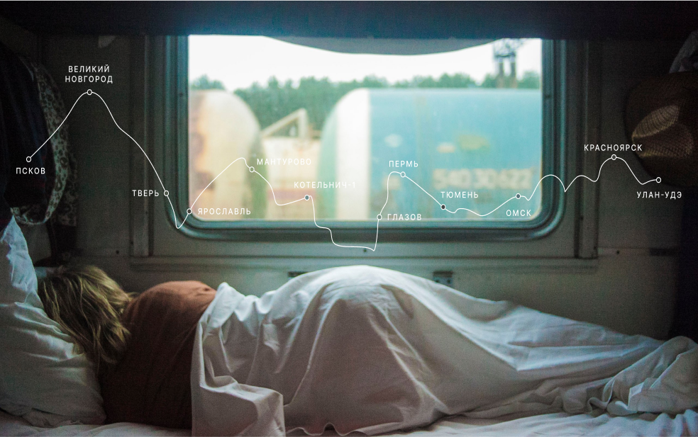

Настоящая страна не в выпусках новостей, а здесь.
ВАША ПОЛКА - ВЕРХНЯЯ
По опросам ВЦИОМ, 95% россиян мечтают куда-нибудь поехать, но только 36% планируют провести отпуск в родной стране. Мол, чего мы тут, дома, не видели? На самом деле, Россия — это целая вселенная с ласковым морем юга, густыми лесами Саян и суровыми льдами плато Путорана. А ещё увидеть все эти красоты можно без миллионов на счету, загранпаспорта и многочасовых перелетов. Как, например, Вера Башмакова — смелая молодая мама, которая взяла в охапку троих детей, усадила их в свою «Ладу» и проехала 20 тысяч километров по родной стране. Мы выбрали и описали некоторые интересные места, достойные вашего отпуска.
Часовых поясов 11
Объектов природного наследия ЮНЕСКО 12
Объектов культурного наследия ЮНЕСКО 16
Природных заповедников 105
Аэропоротов 241


URL
park-kosa.ruЗдесь, посреди лесов и песчаных дюн, вы сможете увидеть два водных
горизонта — спокойного Куршского залива с одной стороны и подёрнутого рябью волн
Балтийского моря с другой. Уникальная природная зона
на краю российского анклава.
На этом Калининградская область не заканчивается.
Для путешественника и исследователя там же по соседству — самая западная точка
России, Балтийская коса, — и немецкое наследие россыпи небольших приморских городов. Атмосфера
здешних мест исключает суету, окуная в спокойствие природы и запах стального, прохладного моря.
Почти весь полуостров находится за Полярным кругом. Саамская тундра,
от которой на юг — тайга, а на север — Ледовитый океан,
прикидывающийся Баренцевым морем.
Возможно, вы смотрели Звягинцева и даже слышали историю
арктического фестиваля в Териберке. Возможно, слово «Хибины» не осталось под снегом
школьных воспоминаний об уроках географии. Возможно, вы не интересовались пронизывающей земную
кору сверхглубокой скважиной, а от апатитов вас давно накрывает апатия. Но ваша мечта увидеть
северное сияние начинает сбываться с билетом в Мурманск.
URL
YouTubeАлтай — одно из красивейших мест в России. В первую
очередь из-за гор: если ехать вдоль хребта, вы увидите склоны, усыпанные соснами, горные реки
и озёра. А если вы откроете в автомобиле окна, сможете познакомиться с невидимым
чудом здешних мест — горным воздухом.
Климат на Алтае умеренный, поэтому ехать сюда
лучше всего летом. Так вы увидите всё разнообразие местной флоры и фауны. По лесам Алтая
бродят
лоси, над хребтами летают орлы, а на равнинах пасутся косули. И знаменитые манулы —
тоже обитатели Алтайского края.
Всем известен Байкал как крупнейшее озеро в мире. Многие также знают, что это
самый большой источник пресной воды и одно из красивейших мест в России.
Конечно, это всё так. Но Байкал ещё идеальное место для
соревнований по скийорингу. Это такой вид спорта, когда лыжник привязывает себя
к мотоциклу, и тандем старается развить как можно бóльшую скорость на льду. В марте
2019 года на фестивале «Байкальская миля» был поставлен мировой рекорд —
197.011 км/ч.
Сибирь заканчивается не на Урале, а в Карелии: образующая тайгу сибирская лиственница не растёт западнее Водлозера. Зато здесь она вымахивает на 30 метров — леса карельских национальных парков из-за непроходимых болот никогда не знали топора. Некоторым соснам уже больше чем полтысячелетия. Прикоснитесь к живому существу, видевшему солнце раньше, чем увидал его Иван Грозный. В девственном лесу на сотню километров не встретишь тропы. А на редких тропинках деревья в паре метров от земли помечены медвежьими когтями. Чтобы все знали, кто тут хозяин.
По мотивам учебной темы о Транссибе — путешествие от столицы до Байкала на электричках.